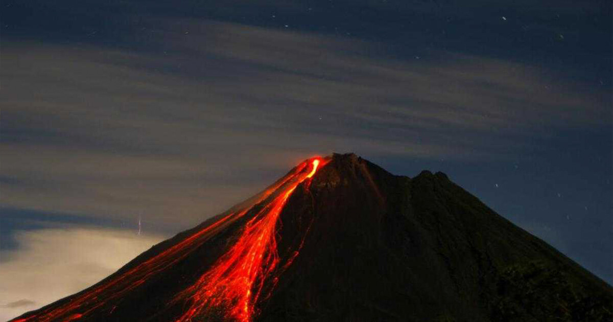
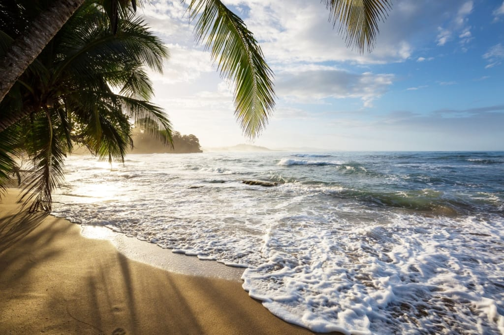
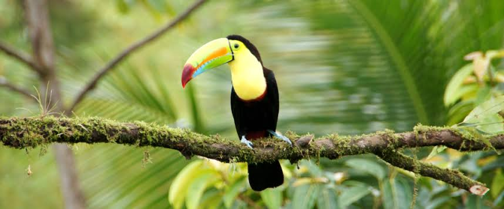
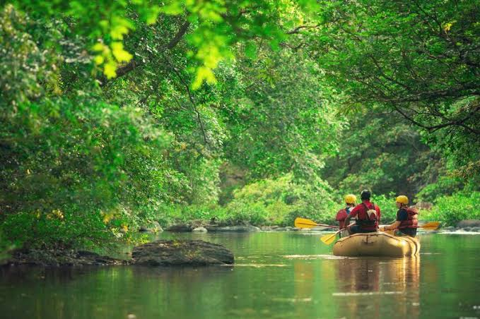
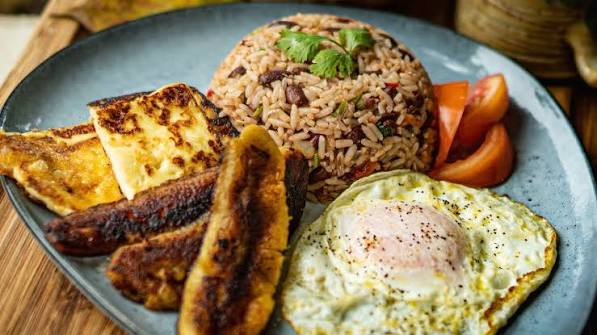

Volcanes
Descubre impresionantes paisajes volcánicos y parques nacionales.
Conoce algunos de los lugares y experiencias que hacen especial a Costa Rica.

Descubre impresionantes paisajes volcánicos y parques nacionales.

Disfruta del Pacifíco y del caribe rodeado de naturaleza tropical.

Explora bosques, animales, senderos y áreas protegidas.

Vive experiencias como canopy, rafting, senderismo y surf.
Senderismo, canopy, rafting, surf y muchas otras actividades esperan por ti.
Quiero conocer másCosta Rica ofrece actividades para todos los gustos.
Disfruta de las olas del Pacífico y del Caribe.
Recorre el bosque desde las alturas.
Vive la emoción de recorrer ríos rodeados de naturaleza.
Camina por bosques,montañas y parques nacionales.
Observa monos, perezosos, aves y muchas otras especies.
Conoce algunos impresionantes paisajes volcánicos.

Conoce algunos de los sabores tradicionales de nuestro país y nuestra cultura gastronómica.
Desde desayunos tradicionales hasta platillos característicos de nuestras regiones.